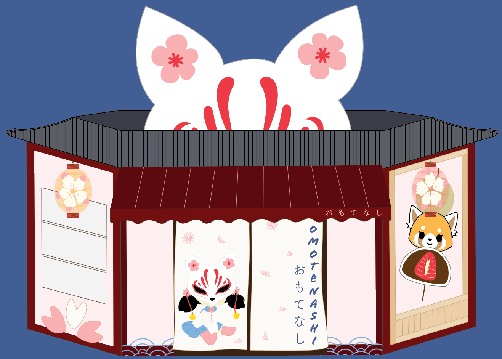
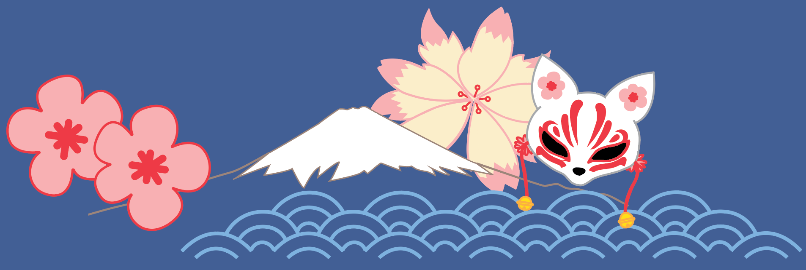

Omotenashi Café aims to be a diverse restaurant in Auckland
by teaching people about Japanese culture and mannerisms through delicious food, drinks, and polite waiters. Omotenashi means superb hospitality,
and wholeheartedly looking after customers. Hospitality is our main brand value inspiring the Japanese word "Omotenashi" for our Cafe name.
Omotenashi Café’s values also what makes it so diverse as good hospitality and polite mannerisms are very important in Japanese culture. Omotenashi
Café also provides an atmosphere of relaxation and cuteness mainly for students to have a safe place to study, relax,
and socialize with friends.
Kōrai, our Café character originates from the Kitsune fox, a character from traditional Japanese folklore. The
Kitsune fox were known as tricksters who were beautiful and violent creatures. The Sakura (Japanese cherry blossom) also
symbolizes beauty and violence, inspiring the connection between the 2 in our Café character, Kōrai. Kōrai is
a student in a Japanese uniform digitally drawn in the cute Japanese chibi art style. Kōrai is also wearing a kitsune fox mask
and sakuras in her hair, to symbolize the Café identity. Kōrai being a Japanese school girl clearly shows that Omotenashi Café is
mainly aimed towards students.


OUR CAFÉ + QUIZ
Our Cafe + Quiz!
Omotenashi Café website also has a quiz! Our Café quiz titled, “Omotenashi no nipponbunka kuizu” (Omotenashi's Japanese Culture Quiz)
helps the user engage with our website in a fun and social way :3
The delicious Japanese food and drink we provide at Omotenashi Café is sure to make your mouth melt. We have savoury snacks
such as Ramen and Takoyaki, and even sweet treats like Bocchan Dango and Ichigo Daifuku (strawberry mochi). The drinks we offer
are Japanese Iced Coffee, Hokkaido Milk Tea, and Gyokuren Sakura tea. These are all delicious food and drink you can order and enjoy at our Café. :)